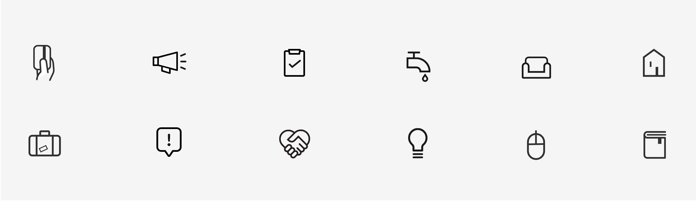

Stay Abode
Enabling a hassle-free community-living experience for a set of co-living residencies
StayAbode is a bunch of fully serviced co-living spaces that mix small private spaces with communal areas to create vibrant, community driven residencies. For aspiring millenials, StayAbode offers a premium, modern way of urban living.
Each building is managed and maintained by a building manager. As the business gained traction, more and more residents moved in, making it increasingly difficult for managers to manually track and resolve daily issues. I worked with the StayAbode team to design their resident and manager apps. The apps not only faciliated communication between residents and building managers and but also helped the managers troubleshoot issues more efficiently.
UX Journeys
Our building managers spent most of their time answering calls - resolving building issues, following up with service staff and reminding residents to pay rent. As they were always occupied, it was proving difficult for them to plan and organise their day efficiently. Using apps, many of the processes could be easily automated, saving valuable time for both residents and managers.
Keeping both the resident and manager experiences in focus, we jotted down use cases that could be simplified or automated. While doing this exercise, we also wanted to encourage community living by facilitating interaction between the residents.

It is evident from the journey flows that residents and managers are the two ends of the same communication channel. Requests by the residents translated into actions for the managers and vice versa. As a result, the resident and manager apps were designed to be quite similar to each other- saving the team a lot of development effort.

Manager app
Apart from helping manage daily operations, the manager app had an organized task list. Managers also had the ability to broadcast important announcements and community events.

Resident app
Several operations like reporting issues, troubleshooting, rent payment, etc. were streamlined using the app, saving a lot of time for the managers. Community events and interaction among residents were also facilitated.
MANAGER APP FEATURES

The manager registers a visitor on check-in. Residents can also register a guest.

Issues reported by residents could be accessed on the app. This helped managers track and troubleshoot issues in a better manner.

Managers and residents could track and schedule a service through the apps.

Managers were provided with a scheduled daily task list to organize their day better.
RESIDENT APP FEATURES

Residents could know more about their neighbours—promoting community living.

People could join free as well as paid community events that were organized every few weeks.

Issue reporting was also automated via the app, saving the building manager from countless calls.

Rent reminders were sent periodically. Enabling online payment saved a lot of manager’s time.
Communication was the key factor for our apps. To emphasise on the communication we kept the design clean and minimal, used bold typography and used simple, clear icons.
ICONS

Feedback
An important function of the app was to collect resident feedback and identify possible pain points related to their stay. The users currently write their feedback in detail, which is communicated to the managers and logged in the database. This will be replaced with issue tags as the team receives more data.


All StayAbode properties are located near bustling areas in the city. To cater to the young target group, areas of interests like pubs, sports centres, gyms can be listed. Moreover, Abode plans to tie up with services providers nearby to deliver a comfortable stay experience.
Special thanks to the founders of StayAbode Viral Chajjer and Varun Bhalla for their valuable inputs throughout the development of the product.